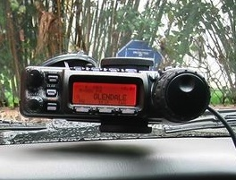
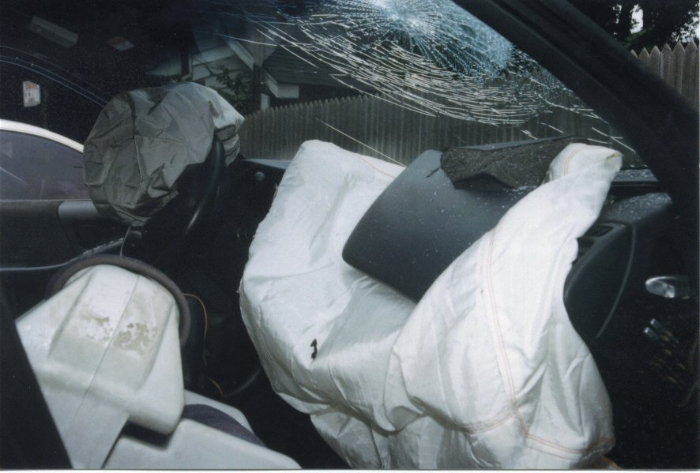
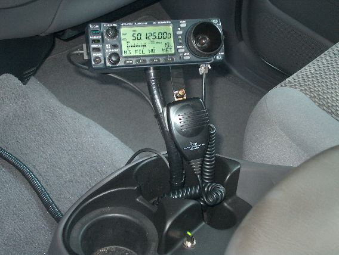
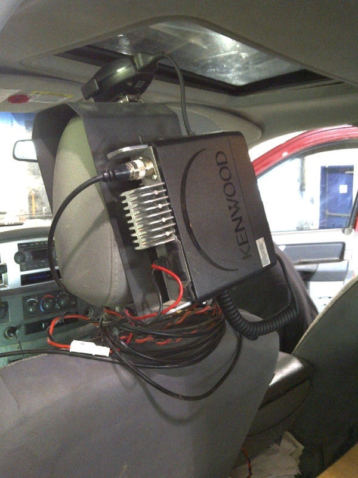
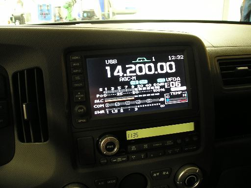
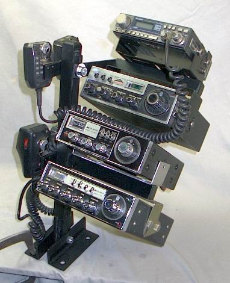

Recovered article. HTML body is from Common Crawl (text only); images came from the Sep 2022 iOS PDF:
Installation Notes.pdf ·
11 extracted images & links ·
11 of 11 images merged inline (aspect-ratio matched). Original src preserved on each
<img> as
data-original-src.
Contents: Ford F-series, and other aluminum-bodies vehicle; Basics; Airbags Are Dangerous!; Doing it Right; Mounting Options; Odds & Ends;
Ford F-series, and other aluminum-bodied vehicles
Ford's F-series, aluminum-bodied pickup trucks require special installation practices with respect to galvanic corrosion. Here is the bulletin from Ford which explains what must be done to prevent galvanic corrosion. The results of failing to follow Ford's guide lines are predictable, and not covered under warranty! If in doubt, contact your local Ford dealer for details! Pay particular attention to grounding guidelines outlined in the bulletin!
The same basic rules apply when installing amateur radio gear in any aluminum bodied vehicle. However, the factory recommended installation procedures may be different than Ford's recommendations. It is always best to contact your local dealer, or the manufactures customer support staff.
☜Return☜
Basics
Anyone planning on installing radio gear in their vehicles should read (at least) the Bonding, Antennas, Antenna Mounts, and Wiring articles. The latter is especially important if your vehicle is equipped with a Battery Monitoring Systems (BMS) and/or Voltage Quality Modules (VQM). It should be noted that BMS and VQM are acronyms used by Ford Motor Company, and other manufacturers may use different acronyms for these devices. They are a requirement of sorts to meet the fed-mandated Idle Engine Shutoff (EIS), also known by a variety of acronyms.
There seems to be a lot of misinformation about installing amateur radio in vehicles with respect to interference (RFI) of on-board electronics . Contrary to information found across the web, no automobile manufacturer prohibits the installation of radio gear, amateur or otherwise. Nor do any deny warranty claims on vehicles so equipped. In fact, they offer guides on proper wiring. Here at the ones for Ford, and GM, albeit a bit dated. The ARRL web site has information on other makes, here.
Very few amateurs go out searching for a new vehicle with the idea of mounting an antenna on it, or a transceiver in it. Typically, they already own a vehicle, and they decide to operate mobile. Either way, it always presents a problem in some fashion. Minivans, SUVs, RVs, Jeeps, station wagons, crossovers, and plastic-skinned vehicles present the greatest challenges.
Whatever your stance on drilling holes, the performance you ultimately end up with is directly dependent on how much time, effort, and expense you're willing to expend. In any mobile installation, there are things which could have been done better. In other words, what seemed like a wonderful idea up front, wasn't so good after the fact. This is of extra concern for those who have never done a mobile install before.
The Photo Gallery's Other Installs album is a good resource for finding a spot to mount antennas, transceivers, and all manner of ancillary hardware. They are listed in alphabetical order by the original call sign. In some cases, the calls have changed and/or the vehicle has been traded. If you're looking for a specific call, use the album's search function.
If you've been reading the other articles on this web site, you'd know this important antenna mounting point; It is the metal mass directly under the antenna, not what's along side, that counts! Typically, this requires drilling holes!
If you're really serious about doing a proper installation, here is a bit of sage advise, Purchase a repair manual for your specific make and model from the manufacturer! These manuals contain enough data to tear apart, and reassemble any or all parts of the vehicle. Typical prices hover around $75 to $125. After-market manuals (≈$25), like those sold by Haynes, always cover multiple models. As a result, coverage is generalized, and may actually leave out data you really need to do a competent installation.
☜Return☜
Airbags Are Dangerous!


Supplemental Restraint Systems (SRS), are better known as airbags, although they are not filled with air! Airbags, as many as 10 in a single vehicle, literally explode in less than 200 milliseconds, or about 200 mph! They always break the windshield on the passenger side as shown left, often break one or both arms of the driver, and in 2.4% of the deployments, they kill an occupant!
By the way, airbags are called Supplemental Restraint Systems because they're designed to supplement, not replace, seat belts. Here is some food for thought. About 35,000 people die in automobile crashes every year in the United States. Over half of those folks were not wearing their seat belt. As the old adage says, don't get caught dead sitting on your seat belt!
Imagine an improperly-mounted, two pound, remote transceiver head (including the suction cup-mounted control head at right), being accelerated at 200 mph, directly toward your face!? It should be glaringly obvious why proper placement and mounting can be literally life-saving! Please don't believe it will never happen to you, because there is a 1 in 6 chance it will sometime in your life. Especially so if you're already distracted by improper placement and use!
Remember too, airbags virtually cover the whole dashboard, as shown below left. This includes the whole top of the dashboard including the "A" pillar areas, the side glass (windows), and in most cases, the knee area as well. About the only area not covered is the center console. If you want to see how far they reach, watch this 2.7 MB wmv movie (used with permission of the NHTSA, National Highway Traffic Safety Administration) of an actual deployment.
And don't think about mounting hardware in front or beside the steering wheel, as the steering column is designed to collapse in a crash, and usually tips up towards the windshield.
Most passenger vehicles made in the last few years (≈2015>), also have underdash airbags to protect the passengers' knees. This eliminates foots wells as a mounting area. And, these underdash locations, often do not display the ubiquitous SRS symboling.
☜Return☜
Doing it Right
If there is but one theme to follow when doing any mobile installation, it is Safety. This means, your installation should be planned and executed in a diligent manner, and in such a way as to decrease distraction as much as possible. This means avoiding locations which interfere with vehicle controls and systems.

The mounting location should allow your radio or remote head to be within easy reach, and easily viewable—not always an easy task to accomplish in view of airbag coverage. The photo at right depicts a good location. The flexible goose neck is screwed down inside the cup holder, sans the rubber protector. This assures it won't dislocate in the event of a crash. On deinstallation, the protector is replaced, and the holes won't be visible. Note that the controls can be adjusted while resting the forearm on the top of the console. This is an ideal situation for obvious reasons.
It is amazing the lengths some folks will go, to avoid doing their installation correctly the first time! The photo at left is a typical example, and the HOS album of the Photo Gallery has many more. If you look closely on the left side of the photo (click to expand) at the dash board, you can see it isn't even wired correctly! Installations like this one are just plain moronic!

Further, cubby holes, center consoles, headrest supports, and storage boxes should not be used. Remember, modern transceivers rely on fans to stay cool, and thus require air flow all around them. This is the main reason factory-supplied mounting brackets should always be used. In other words, don't place any transceiver directly on any surface. Oh, and forget about installing an auxiliary fan blowing on the heat sink as that's moronic too!
Resist the temptation to install hardware you really don't need. A good example is a SWR/wattmeter attached to an FM radio. By the time the meter tells you anything of value, you'll already know something is a miss. The only case for installing one on an HF transceiver, is for manually tuning a screwdriver antenna. Even then, the transceiver's SWR readout should be adequate.
Make everything as automatic as possible. A top priority is an automatic antenna controller. Once setup, a single button push finds the correct antenna resonant point. No meters, no switches, just the existing Tune button on the radio. How much simpler can it get?
Take time to wire your installation correctly. A good example of a wiring faux pas is using an isolated battery charged by the vehicle's existing wiring (accessory socket?). The usual (poor) excuse is that they couldn't find an easy way through the firewall. If you think this is your best solution, you're wrong!
If you're planning on adding an amplifier in the future, now is the time to wire for it, as rework is always more costly in terms of time and money. Avoid amplifiers which feature only manual control.
A popular mounting location for remotable transceivers is under passenger seats, but extra care should be exercised. It is not uncommon for the side airbags and/or their impact sensors to be mounted within the seat(s) framework. These devices are directly interfaced to their control system using secured connections. It is possible, albeit remote, to set off an airbag if these connections are mishandled. Disconnecting the vehicle's battery is not a workaround, as these systems may have their own internal power source!

If you own an IC-7000, and you have a Navigation system, then opt for a TVandNav2Go or similar converter. The right photo is self explanatory. If you don't have a navi, then the AudioVox monitor mirror is an option.
 By the way, the head of the IC-7000 is easily knocked loose from the factory supplied mounting bracket. However, in the center of the bracket is a 1/4x20 threaded boss. Directly over that boss is a small trapezoidal indentation in the head. A short 1/4x20 bolt can be used to secure the head to the mounting bracket. If you use a longer bolt equipped with a jam nut, the head can also be mounted to a variety of brackets using the bolt as a mounting stud.
By the way, the head of the IC-7000 is easily knocked loose from the factory supplied mounting bracket. However, in the center of the bracket is a 1/4x20 threaded boss. Directly over that boss is a small trapezoidal indentation in the head. A short 1/4x20 bolt can be used to secure the head to the mounting bracket. If you use a longer bolt equipped with a jam nut, the head can also be mounted to a variety of brackets using the bolt as a mounting stud.
The best rule of thumb for every mobile installation is this—if it is loose, bolt it down! And, contrary to popular belief, there is always a place to properly screw down radios and/or remote heads. If you have to resort to Velcro®, double-sided sticky tape, suction cups, bungee cords, magnets (no matter how strong they are), wedged in blocks of wood, and rubber bands, you haven't studied the issue long enough!
If you have to resort to using the foot wells, especially the driver's! While is seems like a safe, out of the way place, it isn't! In fact, if the vehicle in question has knee bags, foot well placement can be very dangerous indeed!
Another place to avoid if possible, is the trunk, particularly directly under the package shelf. It is not uncommon for trunk temperatures to exceed 180°F during summer months. And, additional cooling fans are not the answer either.
Lastly, make sure you notify your insurance company and/or agent that you have installed radio gear in your vehicle. In some cases, the notification must be in writing. Most of the time, coverage riders are not necessary, but that is not a given. It is always best to check first, not after a loss. By the way, most automobile insurance companies will not cover radio equipment that is not permanently installed. This rules out mag mounts among other temporary mounting schemes.
☜Return☜
Mounting Options
Don't go out and buy a mount, and then try to figure out how or where to attach it. Plan first, then purchase a suitable mount to fit your specific criteria.
The mounts listed here, are not the ones shipped with your new transceiver. No matter who made the radio, the supplied (usually at extra cost) mounting brackets are rather brief. They're certainly not universal, but just a basic bracket which can be used to mount the remote head (if there is one), and/or the main body. As long as the mounting surface is flat, and you have lots of available space, they'll do just fine. We all know this is not the norm.
 If you're a DIY (do it yourself) kind of guy, just about every decent hardware store carries DIY aluminum. All manner of rod and bar, flat and square, angled or what have you, is available. You can bend it, form it, drill it, and even tap it to suit just about any mounting situation. Unfortunately, not all of us have enough hand tools to fashion such a mounting bracket. Thankfully, adroit manufacturers have come to our rescue.
If you're a DIY (do it yourself) kind of guy, just about every decent hardware store carries DIY aluminum. All manner of rod and bar, flat and square, angled or what have you, is available. You can bend it, form it, drill it, and even tap it to suit just about any mounting situation. Unfortunately, not all of us have enough hand tools to fashion such a mounting bracket. Thankfully, adroit manufacturers have come to our rescue.
There are a few companies who specialize in mobile mounts. Ram Mounts is one of them, and they have a very good selection aimed at us amateur radio operators. Their web sites offers a plethora of examples, including model-specific designs. The photo at left is just one of many.

Doug Johnson, W9IIX, has two different lines of mobile mounts, and enough accessories to go with them to mount just about any amateur transceiver. His e-mail address and telephone number are listed on his web site.
Gamber-Johnson, is most likely the largest manufacturer of mobile mounts in the world. Just about every police, fire, governmental, or allied safety organization uses them exclusively. While Ram Mounts' products (and most others) are universal, Gamber-Johnson's are designed for specific vehicles. Next time you see a parked police vehicle, look inside. The chances are you'll see a G-J mount.
Gamber-Johnson also make a first-rate, lockable slide mount replete with a coaxial QD good for up to 512 MHz. Cheap CB slide in mounts aren't much good above 50 MHz, and I don't know of any that are lockable.
In addition, Panavise, Havis, and Jotto Desk all make customized radio mounts for just about every vehicle you can name. Standard model prices vary from as little as $20, to as much as $200. Large custom mounts can run into the thousands.
If you don't drive off-road, a gooseneck mount might be in order. Several companies make them, and they attach via a seat mounting bolt. Checkout Panavise.
There is another aspect of mobile mounts every user should be aware of, and that is the attachment methodologies used. Spring clamp mounts and some rare-earth magnet mounts may appear secure, they're not. The only safe method is to use a bolt! This applies to the actual mount, and to the device being held by the mount.
 Tac-Comm specializes in what could be called portable mounts. They're unique as they can be stacked, although that is hard to see in the photo. A quick scan of their web site will show you a myriad of configurations. What struck me about them, they could easily be adapted for hump mounting. While few vehicles today have accessible humps, this is a decent alternative for those that do. The basic price of each module is $60, and there are top covers, front protection covers, and even carrying handles!
Tac-Comm specializes in what could be called portable mounts. They're unique as they can be stacked, although that is hard to see in the photo. A quick scan of their web site will show you a myriad of configurations. What struck me about them, they could easily be adapted for hump mounting. While few vehicles today have accessible humps, this is a decent alternative for those that do. The basic price of each module is $60, and there are top covers, front protection covers, and even carrying handles!
The modules themselves are expandable, with literally hundreds of mounting hole combinations. It is a niche product perhaps, but they're well made for whatever purpose you put them to.
☜Return☜
Odds & Ends
There is one mounting location you don't want to use, and that is inside a bed-mounted storage box, no matter what it is, or how it is made. The reason is simply moisture condensation. Storage boxes are typically not vented since they're made to be weatherproof. In most areas where there are large variations in moisture and temperature extremes, condensation builds up inside the boxes with predictable results—rust in other words.
Bed boxes are often used as antenna mounts, although there are better solutions. If you do use a bed box, make sure they are properly bonded to the bed. If in doubt, run short (!) bonding straps to the bed on both sides of the box. And don't mount the antenna in the center! if you think about this for a moment, you'll figure out why you shouldn't.
As a parting thought.... "If Velcro is so good, why don't automobile manufacturers use it? I think this mounting technique shows the loyalty of a car's owner, actually. It demonstrates a level of dedication towards the preservation of their cars to such an extent that they would rather risk injury or death, rather than drill any holes. My hat is off to them." Mark K5LXP, Albuquerque, NM.
☜Return☜
Home
 By the way, the head of the IC-7000 is easily knocked loose from the factory supplied mounting bracket. However, in the center of the bracket is a 1/4x20 threaded boss. Directly over that boss is a small trapezoidal indentation in the head. A short 1/4x20 bolt can be used to secure the head to the mounting bracket. If you use a longer bolt equipped with a jam nut, the head can also be mounted to a variety of brackets using the bolt as a mounting stud.
By the way, the head of the IC-7000 is easily knocked loose from the factory supplied mounting bracket. However, in the center of the bracket is a 1/4x20 threaded boss. Directly over that boss is a small trapezoidal indentation in the head. A short 1/4x20 bolt can be used to secure the head to the mounting bracket. If you use a longer bolt equipped with a jam nut, the head can also be mounted to a variety of brackets using the bolt as a mounting stud. 
{kind=link}
{kind=link}
{kind=link}
{kind=link}
{kind=link}
{kind=link}
{kind=link}